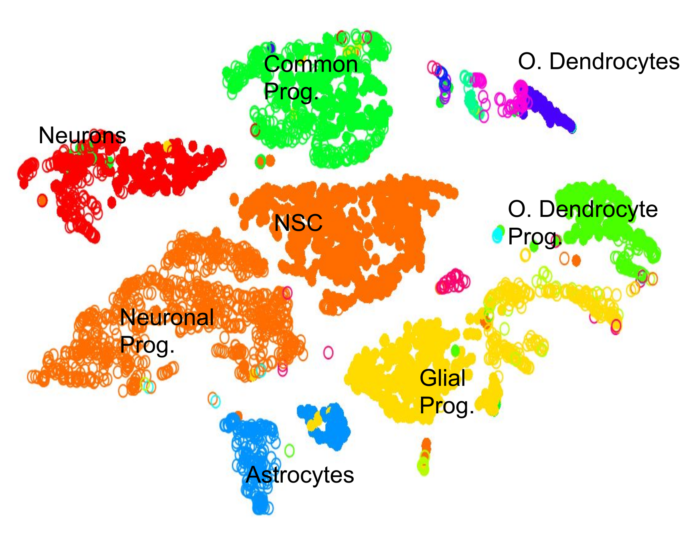
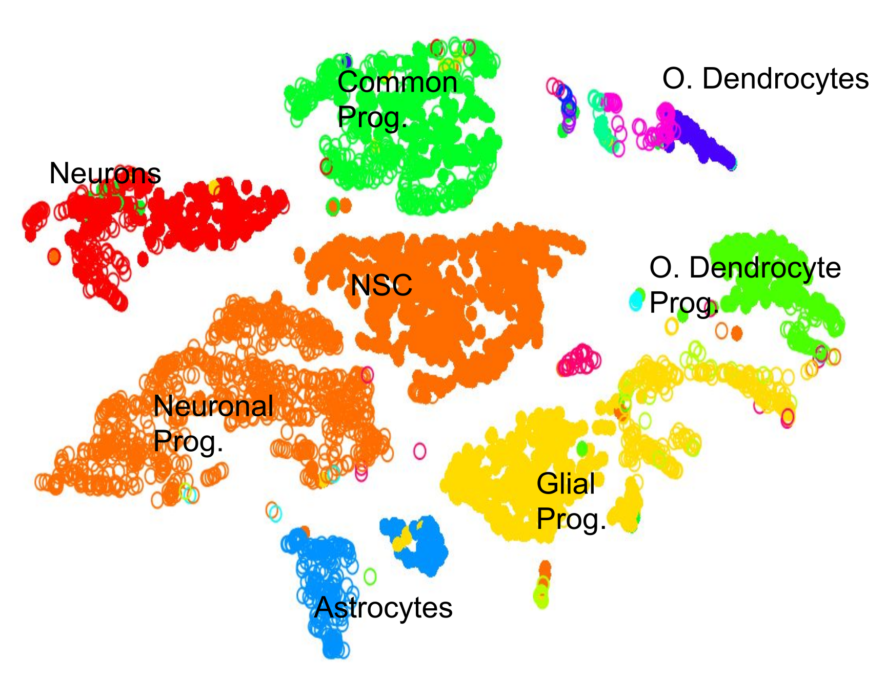

Clustering 3K PBMCs with Scanpy
Contributors
 Mehmet Tekman
Mehmet Tekman
Questions
What are the main steps of scRNA-seq?
What kind of variation can confound an analysis?
Objectives
Learn the main stages of an scRNA-seq analysis
Understand the methods and concepts underlying scRNA-seq
Single Cell RNA Pre-processing
Speaker Notes
- Barcode Extraction
- Mapping
- Gene Annotation
- Batch count matrices
Single Cell RNA Downstream Analysis
Speaker Notes
- Filtering
- Normalising
- Confounder Removal
- Dimension Reduction
- Clustering
- Annotation
Barcoding Cells

Filtering: Cell and Gene

Normalisation: Technical Variation

Normalisation: Biological Variation

Dimension Reduction: Relatedness of Cells

Speaker Notes Build a KNN graph from distance matrix:
- If P and q share distance which is
Dimension Reduction: Projection

Speaker Notes
- Can use tSNE, PCA, UMAP
Community Clustering: Louvain
Aim: Maximise internal links and minimise external links
Community Clustering: Louvain
Pick a cell, place in neighbour, and accept if internal:external increases

Cell Type: Identifying Cluster Types
.left-column50[.image-100[ ]]
.left-column50[.image-100[]]
]]
.left-column50[.image-100[]]
Clustering: Hard vs Soft
.pull-left[
.image-100[]
Hard
- Big spaces between clusters
- Cell types are well defined and the clustering reflects that
]
–
.pull-right[ .image-100[]
Soft
- Clusters bleed into one another
- Cell types seem to intermingle with one another.
]
Speaker Notes Why? Why would there be clusters so close to one another?
Continuous Phenotypes:
.image-100[ ]
]
Speaker Notes
-
Cells aren’t discrete, they transition
-
Continuously changing over time from a less mature type to more mature type
Interactive Environments: live.usegalaxy.eu
Speaker Notes What is Differential Expression in scRNA-seq?
CellxGene Local Test
-
We can probe clusters to see how they are so differentially expressed
pip3 install cellxgene cellxgene launch https://cellxgene-example-data.czi.technology/pbmc3k.h5ad -
Launch locally: http://127.0.0.1:5005
Key Points
- Understanding the purpose of barcoding
- Knowing the difference between hard and soft clustering
- A KNN graph can be generated from a count matrix.
- Community clustering can be generated from a KNN graph.
- Interpreting scRNA-seq plots
Thank you!
This material is the result of a collaborative work. Thanks to the Galaxy Training Network and all the contributors! This material is licensed under the Creative Commons Attribution 4.0 International License.
This material is licensed under the Creative Commons Attribution 4.0 International License.